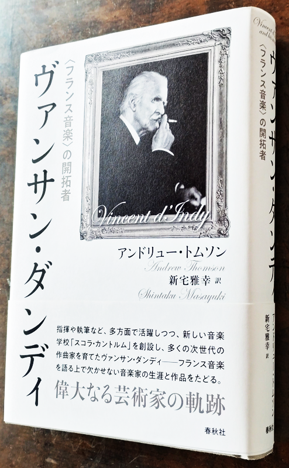

ダンディ: 弦楽四重奏曲第3番
このところイザイにちなんだ作曲家を取り上げてきたが、ラザーリを除いていずれも作曲という面ではフランクおよびその弟子であるダンディとの関係が深い。ダンディは、よく知られるようにスコラ・カントルムの立ち上げに関わり、その校長として長く活躍し、彼らを含めフランキストと称される一派の中心に存在した人物である。今回取り上げるのは、松本大輔氏の『クラシックは死なない！』でも紹介されていたダンディの弦楽四重奏曲全曲アルバムの中から、最晩年（78歳）の作である第3番。
Vincent d'Indy:
Quartet No. 3 in D-Flat Major, Op. 96
Quatuor Joachim
(2001)
IMSLPで楽譜が見られるが、最初の2ページが譜例付きの楽曲構造の分析になっているあたり、いかにも老教育者の面目躍如といった風だ。続く第1楽章の冒頭では3音から成る主要動機（曲全体の循環動機になっている）のみをまず繰り返しソロで奏するようになっており、それがそのままソナタの導入部の冒頭を形成している。ショーソンの『ヴァイオリン、ピアノと弦楽四重奏のための協奏曲』を思わせる開始である。その動機が無機的で、ちょっと作曲の講義が始まったかのような堅苦しい印象を受けるので取っつきにくいのだが、そこを無視して聴き進めば、本体はかなり魅力的な音楽である。第2楽章は民謡風の間奏曲、中間部はややつかみどころがない。第3楽章は変化に富む変奏曲、第4楽章はロンドと全体の構成は伝統的だが適度に洒落ており飽きずに聴かせる。とはいえ何度も聴きたくなるほどかと問われれば返答に詰まりそうだが。
ヨアヒム四重奏団の演奏は技術も確かで貴重ではあるものの、響きにくい調性のためか、録音のせいか、ややコントラストが浅めな気がする。これ以降の新しい録音は見つからなかったが、別傾向の演奏も聴いてみたい所である。

これは先月読んだ本で、アンドリュー・トムソンという音楽評論家によるダンディのかなりマニアックな伝記。ダンディを軸としてフランス・ベルギーを中心に多くの作曲家が登場しており、さまざまな知られざる人間模様が眼前によみがえるかのようである。現代の研究者が資料を元に歴史背景を交えつつ過去を時系列上に生き生きと再現して見せるのは決して容易な作業ではないはず。読んでいて楽しく、知的な刺激に満ちている。ダンディはやや頑固な面があったのかもしれないが、長寿であり交友が広く教育者としても優れていたからこそ、ひとりの人間からここまで多彩な物語を引き出すことができたのだろう。同様の作曲家としてリストが思い出される（本書にも出てくる）。リストの断片的エピソードはたくさん残されているが、こちらもひとまとまりの物語として読んでみたいものだ。
(Apr. 8, 2023)